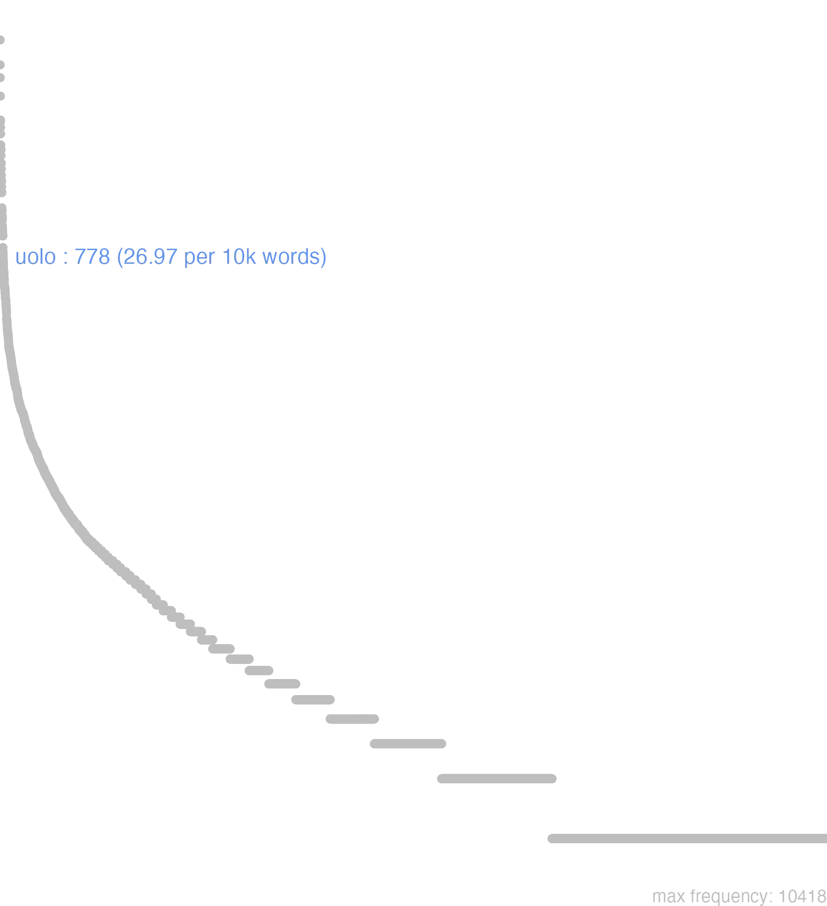

196 uolo
196.0.0.1 bases lexicais
id: http://lila-erc.eu/data/id/lemma/130745
classe: verbo
paradigma: irregular
outras grafias: bolo
variantes do lema:
bolo, uolo presente | indicativo | 1ª pessoa singular | voz ativa
uelle presente | infinitivo | ativo
bolet, uolet futuro | indicativo | 3ª pessoa singular | voz ativa
bolui, uolui pretérito perfeito | indicativo | 1ª pessoa singular | voz ativa
sīs
vĕlim
vŏlō
vīs
vŏlŭī
vŏluī
196.0.0.2 dicionários tradicionais
2 volō vīs, vult, velle, volŭī
v. tr.
Obs.: Constrói-se como intr. absoluto; com acus. de pessoa ou de coisa; com pronome neutro; com inf.; com or. inf. com acus. e inf.; com duplo acus.; e com ut ou ne.
1 I-Sent. próprio Querer, desejar Ter. Eun. 813; Cíc. Nat. 1, 17; Cíc. Verr. 3, 196; Cíc. At. 13, 32, 2; Cíc. Rep. 1, 38; Cíc. Tusc. 1, 34; Cíc. C. M. 73; Ter. Ad. 432; Cíc. Of. 2, 78; Cíc. Rep. 1, 15.
2 I-Sent. próprio Ter vontade de, ter intenção de, consentir Cíc. AI. 9, 1, 3; Cíc. Tusc. 1, 88.
3 I-Sent. próprio Querer bem ou mal bene, male Plaut. Cas. 464.
4 I-Sent. próprio Querer ver Cíc. Q. Fr. 3, 9, 3.
5 I-Sent. próprio Querer falar a Cíc. AI. 10, 16, 4; Ter. And. 536.
6 I-Sent. próprio Querer dizer, significar Cíc. Verr. 2, 150.
7 II-Locução na língua jurídica:
[EXEMPLOS]
7
velitis, jubeatis, Quirites, ut Cíc. Dom. 44; Pis. 72 ‘ordenai, se vos apraz, Romanos, que’.
sultis
= si vultis.
1 Se quereis Plaut. As…1.
velim
pres. do subj. de volo 2.
velle vellem
inf. pres. e imperf. do subj. de volo 2.
vin
= visne?
1 Queres ou não? Hor. Sat. 1, 9, 69.
volt
= vult, 3ª pess. sing. do ind. pres. de volo 2 Cíc. Rep. 3. 45.
volŭī
perf. de volo 2.
vult, volt
3ª pess. sing. do ind. pres. de volo 2.
vultis
2ª pess. pl. do ind. pres. de volo 2.
1 sīs
= sī vis.
Obs.: Expressão de polidez a que corresponde o plural sultis.
1 Se queres, se te agrada, peço-te, por favor Cíc. Amer, 48.
2 vīs
2ª pess. do sing. do ind. pres, de volo 2.
Vŏlo vīs vūlt vŏlŭī vēllĕ
v. trans. da m. familia q. ΒΟΛ, d’onde βόλομαι, βούλομαι, querer, desejar.
1 querer, consentir.
2 Cic. Virg. querer, desejar;
2 ter tenção de.
3 querer bem ou mal a alguem.
4 preparar, meditar.
5 Empregado por pleonasmo.
6 pedir, requerer, exigir.
6 Fig. querer dizer, significar;
[EXEMPLOS]
1
si uelit Jupiter… Virg Se Jupiter consentir, se permittir que…
uelim, nolim Hier eu queira ou não queira; por bem ou por mal, por vontade ou por força, a bem ou a mal
uelint, nolint Plin. J queiram ou não queiram; por bem ou por mal, por vontade ou por força, a bem ou a mal
uelis, nolis Hier queiras ou não; por bem ou por mal, por vontade ou por força, a bem ou a mal
uelit, nolit Cic Elle queira ou não queira; por bem ou por mal, por vontade ou por força, a bem ou a mal
uelitis, iubeatis, Quirites Liv Queirais, Romanos, ordenar formula usada nos comicios para a votação das leis
2
cupio omnia quæ uis Hor Desejo que tenhas o que desejas, teus desejos sejam cumpridos formula de cortezia
heu heu, quid uolui! Virg Ai! que pretendi eu! ou que desejos foram os meus!
hoc ipsum uelle miserius duco… Cic Acho que é maior desgraça ter taes desejos…
hoc uolo Juv Quero-o, é esta a minha vontade
nunc plantaria uellet Perseos V. Fl Elle quizera ter as azas talares de Perseu
nunquid uis? Ved. Nunquis
paucis te uolo Ter Desejo dar-te duas palavras
quid me uis? Plaut Que me queres?
quid uis faciam? Ter Que queres que eu faça?
si quid ille se uelit Caes Se elle tinha alguma coisa a lhe dizer, se elle lhe queria fallar
sic uiuere ut uelis Cic Viver á sua vontade, a seu modo, viver como quizer
sicut ipse uoluerat Nep Como elle mesmo tinha desejado
te superesse uelim Virg Desejo que me sobrevivas
te uolo scil. alloqui. Plaut Quero fallar-te
tu uelim, ut consuesti, nos diligas Cic Desejo que me ames como até aqui
uelim ut uelles Plaut Desejo que tenhas o que desejas, teus desejos sejam cumpridos formula de cortezia
uelle fugam… Virg Querer fugir…
uelle nostrum Aug A nossa vontade, o nosso desejo
uelle parum est Ov Pouco é o querer
uellem quæ uelles Sen Desejo que tenhas o que desejas, teus desejos sejam cumpridos formula de cortezia
uolo mense quintili in Græciam scil. proficisci. Cic Estou disposto a partir para a Grecia no mez de Julho
uolo utì mihi respondeas Cic Desejo que me respondas, vamos, responde-me
uolueris, faciet… Petr Ordena, que elle fará…
ut uelis Cic Como quizeres, como te aprouver, segundo a tua vontade
3
alicui factum esse uelle Gell Interessar-se por alguem, ter-lhe affeição, querer-lhe bem
alicui factum uelle Ter Interessar-se por alguem, ter-lhe affeição, querer-lhe bem
alicuius causa magnopere uelle Cic Querer muito a alguem, ser-lhe muito dedicado, ou affeiçoado
alicuius causa ualde uelle Cic Querer muito a alguem, ser-lhe muito dedicado, ou affeiçoado
bene tibi uult Plaut Elle quer-te bem
non sibi male uult Petr Elle passa bem, tracta-se bem
4
hasta letum utrique uolens Stat Lança que tinha de dar a morte a ambos
quid sibi uult pater? Ter Que pretende meu pae?
se ortum Teucrorum a stirpe uolebat Virg Elle pretendia descender dos Troianos
5
quærit cur sic mentiri uelit Phaed Elle pergunta porque mente assim
6
fabula quæ posci uult Hor Peça theatral que requer ser pedida
quid sibi uolunt…? Cic que querem dizer…?
quid sibi uult…? Cic Que quer dizer…?
quid uult concursus…? Virg Que significa ou para que é este concurso…?
res comica non uult exponi… Hor Um assumpto comico exige que não seja tractado…
Volo vis volui velle
1 Cic. querer, desejar.
[EXEMPLOS]
X
quid istud sibi uult? Ter Que quer dizer isto
uelint, nolint Cic Queiraõ, ou naõ queiraõ
uolo te paucis Ter Quero-te dar huma palavra
uolo te tribus uerbis Plaut Quero-te dar huma palavra
no data
Volo uis uolui uolitum
1 querer
196.0.0.3 dados de corpus
![This chart plots collocate by scoreSUBST, for the headword uolo here are all the values plotted: collocate: si; scoreSUBST: 0. collocate: scio; scoreSUBST: 0. collocate: tu; scoreSUBST: 0. collocate: quis; scoreSUBST: 0. collocate: qua; scoreSUBST: 0. collocate: dico; scoreSUBST: 0. collocate: sum; scoreSUBST: 0. collocate: sui; scoreSUBST: 0. collocate: facio; scoreSUBST: 0. collocate: ut; scoreSUBST: 0. collocate: ego; scoreSUBST: 0. collocate: qui; scoreSUBST: 0. collocate: non; scoreSUBST: 0. collocate: aliquis; scoreSUBST: 0. collocate: fors; scoreSUBST: 0. collocate: fio; scoreSUBST: 0. collocate: se; scoreSUBST: 0. collocate: existimo; scoreSUBST: 0. collocate: accipio; scoreSUBST: 0. collocate: impero; scoreSUBST: 0. collocate: interficio; scoreSUBST: 0. collocate: ostendo; scoreSUBST: 0. collocate: dum; scoreSUBST: 0. collocate: effugio; scoreSUBST: 0. collocate: femina; scoreSUBST: 2. collocate: imitor; scoreSUBST: 0. collocate: animaduerto; scoreSUBST: 0. collocate: saluus; scoreSUBST: 0. collocate: nomino; scoreSUBST: 0. collocate: sane; scoreSUBST: 0. collocate: occupo; scoreSUBST: 0. collocate: conseruo; scoreSUBST: 0. collocate: seruo; scoreSUBST: 0. collocate: num; scoreSUBST: 0. collocate: diu; scoreSUBST: 0](./Media/wordcloud__xx117-111-108-111xx__BY_collocate_scoreSUBST.webp)
![This chart plots collocate by scoreADJ, for the headword uolo here are all the values plotted: collocate: si; scoreADJ: 0. collocate: scio; scoreADJ: 0. collocate: tu; scoreADJ: 0. collocate: quis; scoreADJ: 0. collocate: qua; scoreADJ: 0. collocate: dico; scoreADJ: 0. collocate: sum; scoreADJ: 0. collocate: sui; scoreADJ: 0. collocate: facio; scoreADJ: 0. collocate: ut; scoreADJ: 0. collocate: ego; scoreADJ: 0. collocate: qui; scoreADJ: 0. collocate: non; scoreADJ: 0. collocate: aliquis; scoreADJ: 0. collocate: fors; scoreADJ: 0. collocate: fio; scoreADJ: 0. collocate: se; scoreADJ: 0. collocate: existimo; scoreADJ: 0. collocate: accipio; scoreADJ: 0. collocate: impero; scoreADJ: 0. collocate: interficio; scoreADJ: 0. collocate: ostendo; scoreADJ: 0. collocate: dum; scoreADJ: 0. collocate: effugio; scoreADJ: 0. collocate: femina; scoreADJ: 0. collocate: imitor; scoreADJ: 0. collocate: animaduerto; scoreADJ: 0. collocate: saluus; scoreADJ: 2. collocate: nomino; scoreADJ: 0. collocate: sane; scoreADJ: 0. collocate: occupo; scoreADJ: 0. collocate: conseruo; scoreADJ: 0. collocate: seruo; scoreADJ: 0. collocate: num; scoreADJ: 0. collocate: diu; scoreADJ: 0](./Media/wordcloud__xx117-111-108-111xx__BY_collocate_scoreADJ.webp)
![This chart plots collocate by scoreVERBO, for the headword uolo here are all the values plotted: collocate: si; scoreVERBO: 0. collocate: scio; scoreVERBO: 2. collocate: tu; scoreVERBO: 0. collocate: quis; scoreVERBO: 0. collocate: qua; scoreVERBO: 0. collocate: dico; scoreVERBO: 2. collocate: sum; scoreVERBO: 2. collocate: sui; scoreVERBO: 0. collocate: facio; scoreVERBO: 2. collocate: ut; scoreVERBO: 0. collocate: ego; scoreVERBO: 0. collocate: qui; scoreVERBO: 0. collocate: non; scoreVERBO: 0. collocate: aliquis; scoreVERBO: 0. collocate: fors; scoreVERBO: 0. collocate: fio; scoreVERBO: 2. collocate: se; scoreVERBO: 0. collocate: existimo; scoreVERBO: 2. collocate: accipio; scoreVERBO: 2. collocate: impero; scoreVERBO: 2. collocate: interficio; scoreVERBO: 2. collocate: ostendo; scoreVERBO: 2. collocate: dum; scoreVERBO: 0. collocate: effugio; scoreVERBO: 2. collocate: femina; scoreVERBO: 0. collocate: imitor; scoreVERBO: 2. collocate: animaduerto; scoreVERBO: 2. collocate: saluus; scoreVERBO: 0. collocate: nomino; scoreVERBO: 2. collocate: sane; scoreVERBO: 0. collocate: occupo; scoreVERBO: 2. collocate: conseruo; scoreVERBO: 2. collocate: seruo; scoreVERBO: 2. collocate: num; scoreVERBO: 0. collocate: diu; scoreVERBO: 0](./Media/wordcloud__xx117-111-108-111xx__BY_collocate_scoreVERBO.webp)
![This chart plots collocate by scoreADV, for the headword uolo here are all the values plotted: collocate: si; scoreADV: 0. collocate: scio; scoreADV: 0. collocate: tu; scoreADV: 0. collocate: quis; scoreADV: 0. collocate: qua; scoreADV: 2. collocate: dico; scoreADV: 0. collocate: sum; scoreADV: 0. collocate: sui; scoreADV: 0. collocate: facio; scoreADV: 0. collocate: ut; scoreADV: 0. collocate: ego; scoreADV: 0. collocate: qui; scoreADV: 0. collocate: non; scoreADV: 1. collocate: aliquis; scoreADV: 0. collocate: fors; scoreADV: 2. collocate: fio; scoreADV: 0. collocate: se; scoreADV: 0. collocate: existimo; scoreADV: 0. collocate: accipio; scoreADV: 0. collocate: impero; scoreADV: 0. collocate: interficio; scoreADV: 0. collocate: ostendo; scoreADV: 0. collocate: dum; scoreADV: 2. collocate: effugio; scoreADV: 0. collocate: femina; scoreADV: 0. collocate: imitor; scoreADV: 0. collocate: animaduerto; scoreADV: 0. collocate: saluus; scoreADV: 0. collocate: nomino; scoreADV: 0. collocate: sane; scoreADV: 2. collocate: occupo; scoreADV: 0. collocate: conseruo; scoreADV: 0. collocate: seruo; scoreADV: 0. collocate: num; scoreADV: 2. collocate: diu; scoreADV: 2](./Media/wordcloud__xx117-111-108-111xx__BY_collocate_scoreADV.webp)
![This chart plots collocate by scoreFUNC, for the headword uolo here are all the values plotted: collocate: si; scoreFUNC: 30. collocate: scio; scoreFUNC: 0. collocate: tu; scoreFUNC: 0. collocate: quis; scoreFUNC: 0. collocate: qua; scoreFUNC: 0. collocate: dico; scoreFUNC: 0. collocate: sum; scoreFUNC: 0. collocate: sui; scoreFUNC: 0. collocate: facio; scoreFUNC: 0. collocate: ut; scoreFUNC: 10. collocate: ego; scoreFUNC: 0. collocate: qui; scoreFUNC: 0. collocate: non; scoreFUNC: 0. collocate: aliquis; scoreFUNC: 0. collocate: fors; scoreFUNC: 0. collocate: fio; scoreFUNC: 0. collocate: se; scoreFUNC: 0. collocate: existimo; scoreFUNC: 0. collocate: accipio; scoreFUNC: 0. collocate: impero; scoreFUNC: 0. collocate: interficio; scoreFUNC: 0. collocate: ostendo; scoreFUNC: 0. collocate: dum; scoreFUNC: 0. collocate: effugio; scoreFUNC: 0. collocate: femina; scoreFUNC: 0. collocate: imitor; scoreFUNC: 0. collocate: animaduerto; scoreFUNC: 0. collocate: saluus; scoreFUNC: 0. collocate: nomino; scoreFUNC: 0. collocate: sane; scoreFUNC: 0. collocate: occupo; scoreFUNC: 0. collocate: conseruo; scoreFUNC: 0. collocate: seruo; scoreFUNC: 0. collocate: num; scoreFUNC: 0. collocate: diu; scoreFUNC: 0](./Media/wordcloud__xx117-111-108-111xx__BY_collocate_scoreFUNC.webp)
![This charts plots the frequency of lemma by author_Frequencies. The Phaedrus subcorpus registers the highest normalized frequency, with the value of 45.54 and an absolute frequency of 30. The Cicero subcorpus follows, with a normalized frequency of 31.4 and an absolute frequency of 504. the subcorpus with the least normalized frequency is Suetonius with the normalized value of 0 and an absolute freqeuncy of 0. here are all the values: subcorpus: Caesar ; normalized frequency: 44 ; absolute frequency: 16.6175693028174. subcorpus: Cicero ; normalized frequency: 504 ; absolute frequency: 31.3971742543171. subcorpus: Horatius ; normalized frequency: 29 ; absolute frequency: 25.7525974602611. subcorpus: Ovidius ; normalized frequency: 4 ; absolute frequency: 6.86341798215511. subcorpus: Phaedrus ; normalized frequency: 30 ; absolute frequency: 45.544253833308. subcorpus: Sallustius ; normalized frequency: 12 ; absolute frequency: 11.1306928856321. subcorpus: Seneca ; normalized frequency: 138 ; absolute frequency: 25.7553983688248. subcorpus: Suetonius ; normalized frequency: 0 ; absolute frequency: 0. subcorpus: Tacitus ; normalized frequency: 4 ; absolute frequency: 13.7315482320632. subcorpus: Vergilius ; normalized frequency: 5 ; absolute frequency: 9.65250965250965. subcorpus: Hieronymus ; normalized frequency: 8 ; absolute frequency: 17.9734891035722](./Media/barchart__xx117-111-108-111xx__lemma_BY_author_Frequencies.webp)
![This charts plots the frequency of lemma by genre_Frequencies. The Prosa.epistolográfica subcorpus registers the highest normalized frequency, with the value of 47.96 and an absolute frequency of 181. The Prosa.filosófica subcorpus follows, with a normalized frequency of 29.98 and an absolute frequency of 182. the subcorpus with the least normalized frequency is Poesia.trágica with the normalized value of 7.82 and an absolute freqeuncy of 9. here are all the values: subcorpus: Prosa.histórica ; normalized frequency: 60 ; absolute frequency: 14.6060030672606. subcorpus: Prosa.filosófica ; normalized frequency: 182 ; absolute frequency: 29.9830315810283. subcorpus: Prosa.oratória ; normalized frequency: 270 ; absolute frequency: 25.9234011502309. subcorpus: Prosa.epistolográfica ; normalized frequency: 181 ; absolute frequency: 47.960995256896. subcorpus: Poesia.lírica ; normalized frequency: 32 ; absolute frequency: 26.9201648860099. subcorpus: Poesia.didática ; normalized frequency: 31 ; absolute frequency: 26.2956993807787. subcorpus: Poesia.trágica ; normalized frequency: 9 ; absolute frequency: 7.81792911744267. subcorpus: Poesia.épica ; normalized frequency: 5 ; absolute frequency: 9.65250965250965. subcorpus: Prosa.ficcional ; normalized frequency: 8 ; absolute frequency: 17.9734891035722](./Media/barchart__xx117-111-108-111xx__lemma_BY_genre_Frequencies.webp)
![This charts plots the frequency of lemma by period_Frequencies. The I.a.C. subcorpus registers the highest normalized frequency, with the value of 27.79 and an absolute frequency of 597. The I.a.C. subcorpus follows, with a normalized frequency of 27.79 and an absolute frequency of 597. the subcorpus with the least normalized frequency is II.d.C. with the normalized value of 10.47 and an absolute freqeuncy of 4. here are all the values: subcorpus: I.a.C. ; normalized frequency: 597 ; absolute frequency: 27.7868280195485. subcorpus: I.d.C. ; normalized frequency: 169 ; absolute frequency: 25.8528376931314. subcorpus: II.d.C. ; normalized frequency: 4 ; absolute frequency: 10.4712041884817. subcorpus: IV.d.C. ; normalized frequency: 8 ; absolute frequency: 17.9734891035722](./Media/barchart__xx117-111-108-111xx__lemma_BY_period_Frequencies.webp)
credas mihi velim
Cic.Att.2.13.2
Gostaria que acreditasses em mim. [JDD]
quid sibi uellet
Caes.Gal.1.44.8
O que pretendia? [JDD]
quam vellem Romae mansisses
Cic.Att.2.22.1
Como eu queria que estivesses em Roma! [JDD, de outra edição]
fortuna tua non uult
Sen.Ep.19.8
A tua fortuna não quer. [JDD]
illi se numerare velle
Cic.Att.5.21.12
Eles querem pagar [JDD]
sane ita cadebat ut vellem
Cic.Att.3.7.1
Sem dúvida, isso seria como eu queria. [JDD]
videbis ergo hominem si voles
Cic.Att.4.12.1
Portanto, verás o homem, se quiseres. [JDD]
Romae a.d.xiiii Kal volumus esse
Cic.Att.4.13.1
Queremos estar em Roma no décimo terceiro dia antes das calendas [19 de novembro]. [JDD, de outra edição]
exspectare velis cures ut sciam
Cic.Att.1.17.11
Cuides para que eu saiba quando queres que eu te espere. [JDD, de outra edição]
apud te est ut volumus
Cic.Att.1.8.1
Em tua casa está tudo conforme queremos. [JDD]
cum adsectaretur numquid uis occupo
Hor.S.1.9.6
Como ele me acompanhasse, tomo a palavra: “Por ventura desejas alguma coisa?” [JDD]
non poterant salua esse nisi uellent
Sen.Ep.121.24
Não podiam estar a salvo, se não quisessem isso. [JDD]
inquit non vis citius progredi ?
Phaed.3.6
Não queres ir mais rápido? [JDD]
utinam quidem aliquid uelletis esse populare
Cic.Phil.1.21.7
Quem dera que, realmente, quisésseis que alguma coisa fosse do povo! [JDD]
si quid habes certius velim scire
Cic.Att.4.10.1
Se tens algo mais certo, gostaria de saber. [JDD]
uellem hanc contemptionem pecuniae suis reliquisset
Cic.Phil.3.16.12
Eu queria que ele tivesse deixado aos seus este desprezo por dinheiro! [JDD]
Pompeius illam velle se dicit familiares hanc
Cic.Att.4.1.7
Pompeu diz que quer aquela, seus amigos, esta. [JDD]
etiam illud cuius modi sit velim perspicias
Cic.Att.4.11.1
Inclusive gostaria que verificasses como está aquele assunto. [JDD]
iudices habemus quos voluimus summa accusatoris voluntate
Cic.Att.1.2.1
Temos os juízes que queremos, com total anuência do acusador. [JDD, de outra edição]
si locare voluisses duobus his muneribus liber esses
Cic.Att.4.4A.2
Se tivesses querido alugá-los, com estes dois espetáculos terias amortizado a dívida. [JDD, de outra edição]
quam vellem Romae esses si forte non es
Cic.Att.5.18.1
Como eu queria que estivesses em Roma, se acaso não estás! [JDD]
uellem dictum esset ab eodem etiam de Dione
Cic.Cael.23
Eu queria que também tivesse sido dito pelo mesmo algo a respeito de Díon. [JDD]
Anicato ut te velle intellexeram nullo loco defui
Cic.Att.2.20.1
A Anicato, como tinha entendido que tu querias, não tenho faltado em momento algum. [JDD]
hoc te intellegere volo pergraviter illum esse offensum
Cic.Att.1.10.2
Quero que entendas isto, que ele está profundamente ofendido. [JDD]
id si putas me posse sanari cures velim
Cic.Att.3.12.2
Gostaria que cuidasses disso, se achas que eu posso ser salvo. [JDD]
quid de his cogites et quando scire velim
Cic.Att.5.3.1
Eu gostaria de saber o que pensas desses assuntos e quando. [JDD]
Ne c vero hoc arroganter dictum existimari velim
Cic.Off.1.2
E, na verdade, eu não queria que isto fosse considerado como arrogantemente dito. [JDD, de outra edição]
inuenit Archagathus paucos qui uellent accipere iis dedit
Cic.Ver.2.4.53.15
Arcágato encontrou uns poucos que queriam aceitá-las; deu-lhes. [JDD]
Inops , potentem dum vult imitari , perit .
Phaed.1.24
O fraco, quando quer imitar o forte, perece. [JDD]
numquam inquit uoluisset id quidem sed si uoluisset paruissem
Cic.Amici.37
“Nunca”, diz, “por certo ele teria querido isso; mas se tivesse querido, eu teria obedecido.” [JDD]
ipse si uelit num etiam Lucium fratrem passurum arbitramur
Cic.Phil.6.10.1
Se ele próprio quisesse, por acaso julgamos que seu irmão Lúcio permitiria? [JDD]
uis scire quam non paeniteat hoc pretio aestimasse uirtutem
Sen.Prov.3.9
Queres saber como ele não se arrepende de ter avaliado a virtude com este preço? [JDD]
proinde isti licet faciant quos volent consules tribunos plebis
Cic.Att.2.9.2
Assim, mesmo que esses façam quem eles querem como cônsules, tribunos da plebe [JDD, de outra edição]
neque enim me desperare vis ne c temere sperare
Cic.Att.3.18.2
pois nem queres me desesperar nem esperas sem motivo. [JDD, de outra edição]
si quid de his rebus dicere uellet feci potestatem
Cic.Catil.3.11.2
Se ele quisesse dizer algo sobre aquelas coisas, dei permissão. [JDD]
illud tamen quod scribis animadvertas velim de portorio circumvectionis
Cic.Att.2.16.4
Contudo, eu queria que atentasses para aquilo que me escreves sobre a taxa de circulação de mercadorias. [JDD]
et cum Graecos tum vero diligenter Latinos ut conserves velim
Cic.Att.2.1.12
E gostaria que conservasses cuidadosamente tanto os gregos quanto os latinos. [JDD, de outra edição]
ortum quidem amicitiae uidetis nisi quid ad haec forte uultis
Cic.Amici.32
Vedes, na verdade, o nascimento da amizade, a não ser que por acaso queirais acrescentar algo a essas coisas. [JDD]
quem si interficere uoluisset quantae quotiens occasiones quam praeclarae fuerunt
Cic.Mil.38
Se tivesse querido matá-lo, que grandes e quantas ocasiões quão excelentes houve! [JDD]
denique etiam quid a te fiat ad me velim scribas
Cic.Att.4.11.2
enfim gostaria que me escrevesses também o que está sendo feito por ti. [JDD]
id autem facere ob eam causam dicebant quod tardius vellet decedere
Cic.Att.5.16.4
e dizem que ele faz isso por esse motivo, porque quer sair mais tarde. [JDD]
habere uidetur ista res iniquitatem si imperare uelis difficultatem si rogare
Cic.Catil.4.7.17
Essa decisão parece ter uma iniquidade, se queres ordenar, uma dificuldade, se queres pedir. [JDD]
tam diu autem velle debebis quoad te quantum proficias non paenitebit
Cic.Off.1.2
deverás, porém, querer por tanto tempo até não te arrependeres do quanto progridas. [JDD]
Mustela ab homine prensa cum instantem necem Effugere vellet : inquit
Phaed.1.22
Uma doninha, apanhada por um homem, querendo escapar da morte iminente, diz. [JDD, de outra edição]
parere si voluisset feminam , Quid profecisset , cum crearer masculus ?
Phaed.3.15
se ela tivesse querido parir uma fêmea, de que lhe serviria, já que eu estava sendo gerado macho? [JDD]
Si procurare vis ostentum , rustice , Uxores inquit da tuis pastoribus .
Phaed.3.3
“Se queres afastar o prodígio, camponês, dá esposas aos teus pastores”. [JDD]
tua te inquit eadem quae saepe fortuna seruauit negauisti tum te inspicere uelle
Cic.Deiot.19
“Tua boa sorte,” diz “a mesma que muitas outras vezes, te salvou: disseste que não querias ver [os presentes] naquela ocasião.” [JDD]
si uelim nominare homines qui aut non minoris aut etiam pluris emerint ne ne possum
Cic.Ver.2.4.14.4
E se eu quisesse nomear as pessoas que compraram ou por um preço não menor ou até por mais, acaso não posso? [JDD]
196.0.0.4 Diagrama de Zipf
